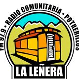

Somos el Colectivo de Medios Comunitarios de Cuyo. Formado en el año 2003, y está ubicada en Las Vegas, Potrerillos, a 70 km de la Ciudad de Mendoza. Tenemos una programación muy variada, pero siempre buscando aportar a la construcción de la identidad del lugar. Somos parte de FARCO (Foro Argentino de Radios Comunitarias) y del CoMeCuCo (Colectivo de Medios Comunitarios de Cuyo).
-

- 
-
-
MAIL
REDES